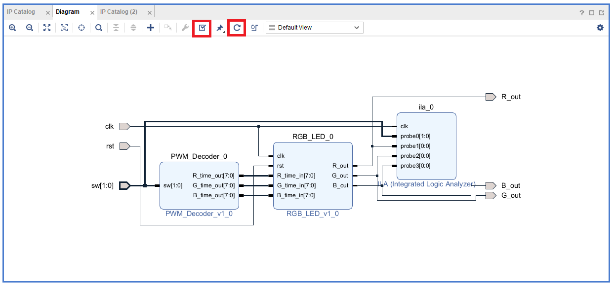
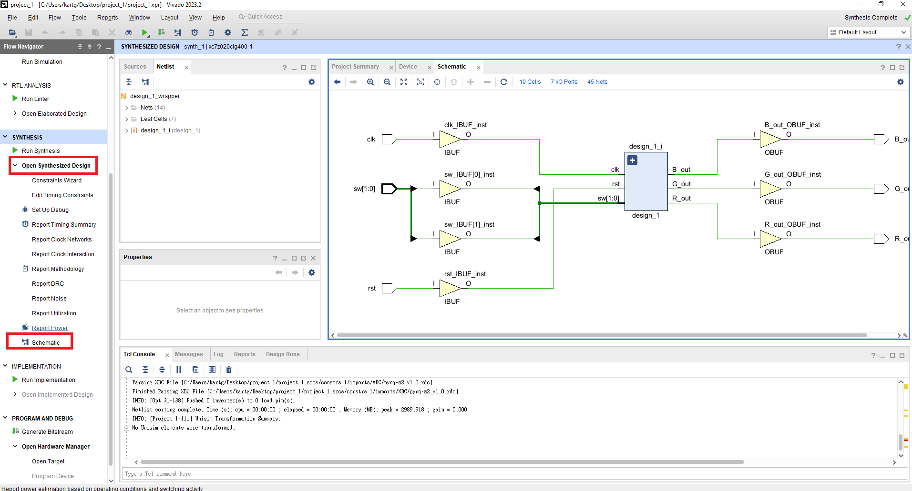
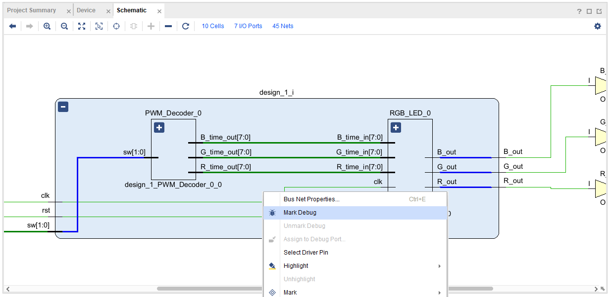
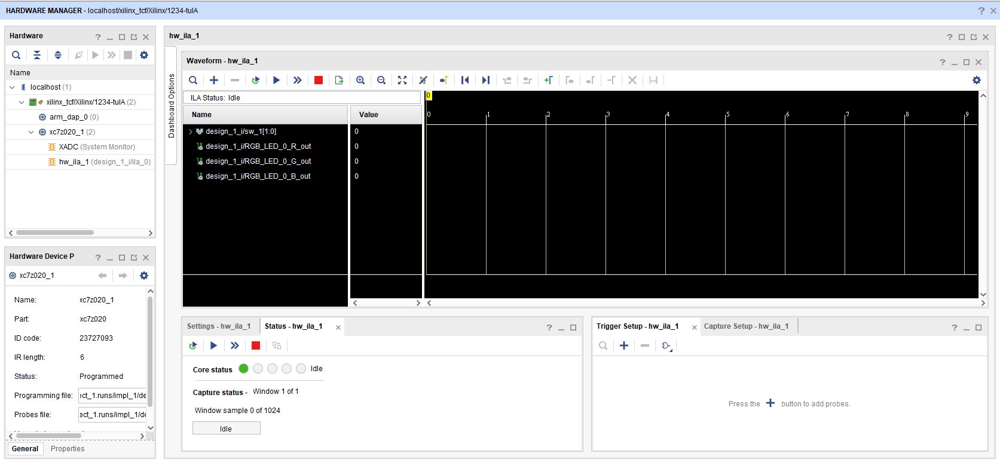
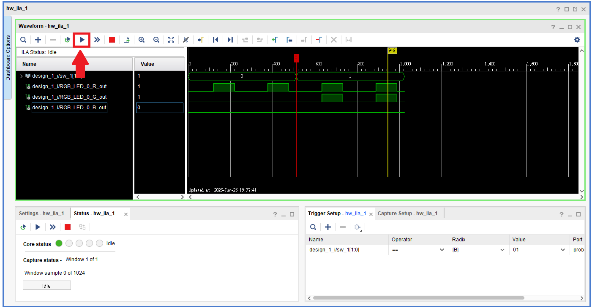
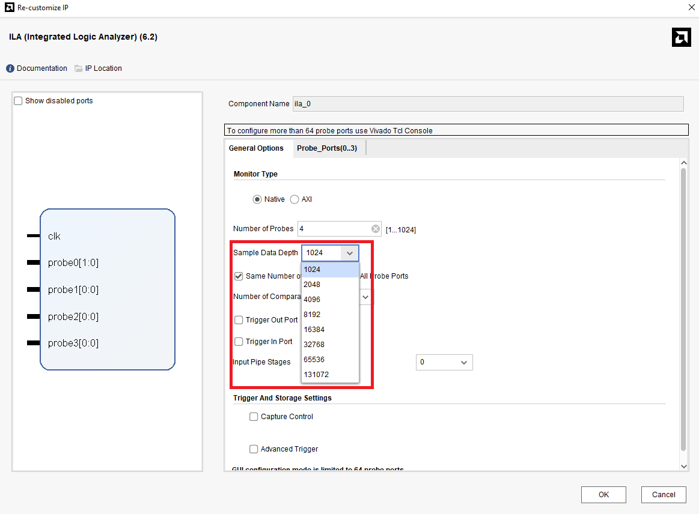
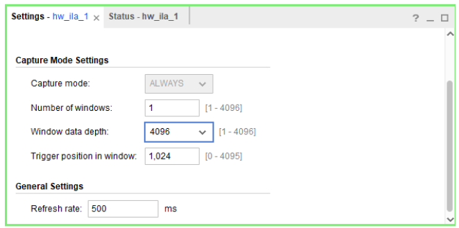

Extra4-Debugger
本章將介紹如何在 Vivado 中使用 ILA（Integrated Logic Analyzer） 進行 FPGA 硬體偵錯。
透過 ILA 工具，我們可以在電路實際運行於 FPGA 上時，觀察內部訊號的變化，協助排除模擬階段無法捕捉的問題。
Extra 4.1 ILA Block Design
-
沿用
Part4-2的 Block Design，在 Vivado 提供的 IP Catalog 中搜尋ILA，將其加入設計中。
-
對
ILA點右鍵選取Customize後，根據以下步驟設定

-
依照下圖方式對
ILA做連接，接完線後做一次Regenerate Layout和Validate Design，以確認沒有錯誤
-
驗證沒問題後，在左方 Design Sources 內的 block design 項目按右鍵，選擇
Create HDL Wrapper然後執行Synthesis -> Implementation -> Generate Bitstream並將 Bitstream file 燒錄進 FPGA -
可先跳到
Extra 4.3觀看ILA Waveform，Extra 4.2 Mark Debug為另一種設定方法
Extra 4.2 Mark Debug
-
將
Part4-2的電路拿去合成後，點選左側Open Synthesized Design -> Schematic
-
假設我們要觀察
RGB LED 給出的三個 Output、以及PWM_Decoder 的 sw 訊號，將 Schematic 中design_1左上角的 + 點開並找到我們要看的四條訊號線，按住 Ctrl 選擇這四條線使其變成藍色後，在其中一條線上按右鍵，點選Mark Debug
-
點選左側
Open Synthesized Design -> Set Up Debug
-
在
Clock Domain Undefined的地方右鍵，選擇Select Clock Domain
-
選擇
clk_IBUF
完成後如下圖

-
設定
Sample Data Width
-
設定完成後再重新 Synthesize 一次，再打開 Schematic 會發現多了兩個 Debug Blocks

-
Implementation -> Generate Bitstream，並燒錄到 FPGA 上
Extra 4.3 ILA Waveform
-
Extra 4.1和Extra 4.2的電路燒入進去 FPGA 後，Debug Probes視窗將會開啟，若沒有的話請點選Window -> Debug Probes
-
接著我們要設定 Trigger 條件，假設我們 Trigger 的條件為 sw == 2'b01 在 Trigger Setup 的視窗點選 + 號將 sw 訊號加入，然後對其做設定

-
此時先把 FPGA 版上的
sw0和sw1都撥到零的位子後，點選Run Trigger for this ILA core
若你有照上方所說先把 FPGA 版上的
sw0和sw1都撥到零的位子，此時會在Wait for Trigger的狀態，此時ILA會一直紀錄數值直到我們把sw0撥到1的位置就會被觸發
sw0撥到1的位子隨即觸發，並在上方波型圖顯示觸發前後的波型
Capture Mode Settings
| 名稱 | 意思 |
|---|---|
| Sample of data depth | 在建立 ILA core 時，設定的 Sample of data depth。它會變成 ILA 的硬體參數 C_DATA_DEPTH。 |
| Window data depth | 在 ILA 實際抓資料時，一次要抓多少筆資料。上限就是 sample of data depth。 |
| Trigger position in window | 設定「觸發點在這次擷取的哪個位置」，這會決定擷取多少資料是在「觸發點之前」與「觸發點之後」。 |
-
ILA IP自訂時可以選擇Sample Data Width，深度開得越大，使用的FPGA BRAM資源就越多，ILA IP儲存 Capture 的資料主要就是使用BRAM
-
ILA開啟後可以透過調整左下角的Window data depth或Trigger postition in window來去調整你要紀錄 Trigger 前後多少的資料
-
For Example:


Trigger Mode Settings
-
透過
+號可以增加 Trigger 的條件，可以複數條 Trigger 條件同時存在
-
點選上方
邏輯閘可以選擇下方的條件要在如何的 Boolean 條件下發生 Trigger
📌 Note：
- 若訊號為高速 clock domain，建議先經過 D Flip-Flop 進行觸發延遲再接入 ILA
- ILA 必須由 free-running clock 驅動，確保時脈不會被 gating、reset、或控制邏輯中斷
- 避免使用 gated clock 或條件性 enable 的 clock 作為 ILA 的 clock source
- 若觀察跨 clock domain 訊號，請先將其同步處理後再接入 ILA，以避免 metastability
📌 Free-running clock：
- 不會被設計中的控制訊號（如 enable/reset）中斷的時脈
- 與被觀察訊號在同一個 clock domain 或可被同步跨域
Free-running clock Example in PYNQ-Z2 :
- 系統主時脈( H16 pin in PYNQ-Z2 ): clk_125MHz
- Zynq PS 送出的 FCLK_CLK0